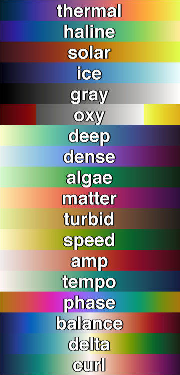
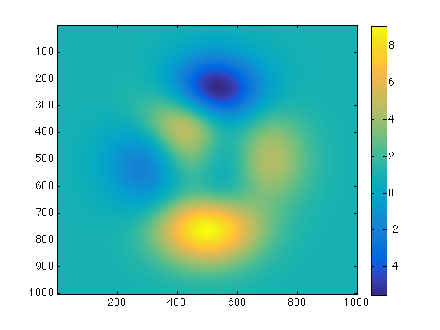
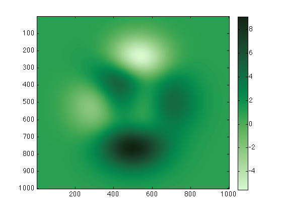
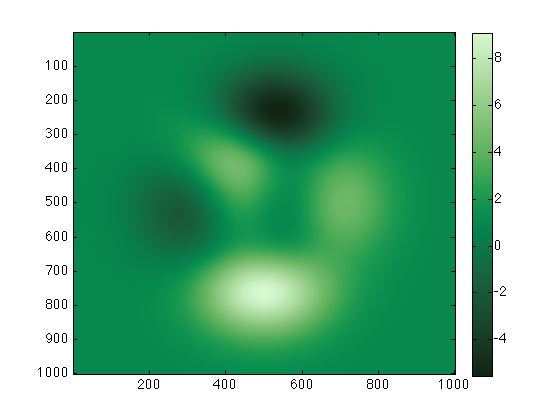
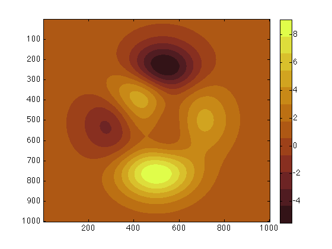
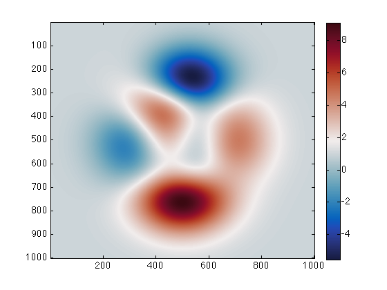
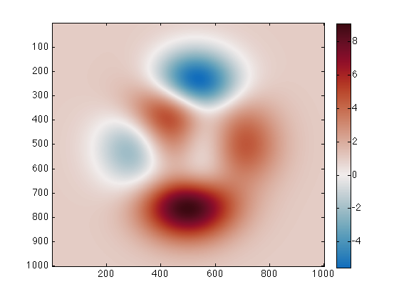

cmocean documentation
The cmocean function returns perceptually-uniform colormaps generated by Kristen Thyng. A detailed description of the cmocean project is available at http://matplotlib.org/cmocean.
If you find an occasion to cite these colormaps for any reason, or if you just want some nice beach reading, check out the following paper from the journal Oceanography:
Kristen M. Thyng, Chad A. Greene, Robert D. Hetland, Heather M. Zimmerle, and Steven F. DiMarco. True colors of oceanography: Guidelines for effective and accurate colormap selection. Oceanography, September 2016. http://dx.doi.org/10.5670/oceanog.2016.66
Contents
Syntax
cmocean
cmap = cmocean('ColormapName')
cmap = cmocean('-ColormapName')
cmap = cmocean(...,NLevels)
cmap = cmocean(...,'pivot',PivotValue)
cmocean(...)Description
cmocean without any inputs displays colormap options.
cmap = cmocean('ColormapName') returns a 256x3 colormap. ColormapName can be any of of the following:

cmap = cmocean('-ColormapName') a minus sign preceeding any ColormapName flips the order of the colormap.
cmap = cmocean(...,NLevels) specifies a number of levels in the colormap. Default value is 256.
cmap = cmocean(...,'pivot',PivotValue) centers a diverging colormap such that the point of color divergence corresponds to a specified value and maximum extents are set using current caxis limits. If no PivotValue is set, 0 is assumed. Early versions of this function used 'zero' as the syntax for 'pivot',0 and the old syntax is still supported.
cmocean(...) without any outputs sets the current colormap to the current axes.
Examples
Using this sample plot:
imagesc(peaks(1000)+1) colorbar
Set the colormap to 'algae':
cmocean('algae')
 Same as above, but with an inverted algae colormap:
cmocean('-algae')
 Set the colormap to a 12-level 'solar':
cmocean('solar',12)
 Get the RGB values of a 5-level thermal colormap:
RGB = cmocean('thermal',5)
RGB =
0.0156 0.1382 0.2018
0.3366 0.2317 0.6123
0.6893 0.3727 0.5097
0.9772 0.5740 0.2578
0.9090 0.9822 0.3555
Some of those values are below zero and others are above. If this dataset represents anomalies, perhaps a diverging colormap is more appropriate:
cmocean('balance')
 It's unlikely that the center value of this color axis 1.7776 is an interesting value about which the data diverges. If you want to center the colormap on zero using the current color axis limits, simply include the 'pivot' option:
cmocean('balance','pivot',0)
Author Info
This function was written by Chad A. Greene of the Institute for Geophysics at the University of Texas at Austin (UTIG), June 2016, using colormaps created by Kristen Thyng of Texas A&M University, Department of Oceanography. More information on the cmocean project can be found at http://matplotlib.org/cmocean.